10 部片单 · 恐怖 / 科幻 / 惊悚 / 悬疑 / 剧情
| # | 片名 | 类型 | 评分 / 状态 |
|---|---|---|---|
| 01 | 银翼杀手 | 科幻 / 惊悚 / 赛博朋克 | 8.5 / 89% / 84 |
| 02 | 怪形 | 科幻 / 恐怖 / 惊悚 | 8.1 / 84% / 8.2 |
| 03 | 惊魂记 | 恐怖 / 悬疑 / 惊悚 | 8.8 / 97% / 97 |
| 04 | 灵异第六感 | 悬疑 / 恐怖 / 剧情 | 8.8 / 86%（观众 90%） / 64 |
| 05 | 小岛惊魂 | 恐怖 / 悬疑 / 剧情 | 8.2 / 85% / 7.6 |
| 06 | 禁闭岛 | 悬疑 / 惊悚 / 剧情 | 8.8 / 69%（观众 77%） / 8.2 |
| 07 | 非常嫌疑犯 | 悬疑 / 犯罪 / 惊悚 | 8.6 / 88% / 8.5 |
| 08 | 致命ID | 悬疑 / 惊悚 / 恐怖 | 8.8 / 62%（观众 75%） / 7.3 |
| 09 | 源代码 | 科幻 / 悬疑 / 惊悚 | 8.5 / 92% / 7.5 |
| 10 | 香水 | 惊悚 / 剧情 / 犯罪 | 8.4 / 59% / 56 |
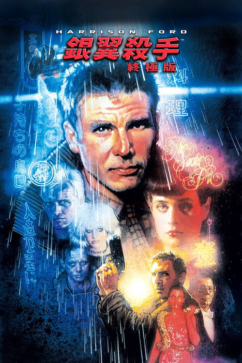
银翼杀手 Blade Runner
他的工作叫「退休」复制人。后来他开始分不清自己是哪种。
剧情梗概
2019 年的洛杉矶，永夜、酸雨、霓虹。泰瑞尔公司制造的复制人比人类更强壮也更聪明，被派去星际殖民地做最危险的活，只有四年寿命。六名 Nexus-6 型复制人叛逃回地球，已经退休的银翼杀手瑞克·戴克被重新召回，任务是「退休」他们。他循着线索追到一个叫瑞秋的女人，也在追捕中慢慢发现：这些复制人比任何一个人类都更想活下去。
亮点
- 雷德利·斯科特执导，改编自菲利普·K·迪克的小说《仿生人会梦见电子羊吗？》；影片上映后陆续出现七个不同剪辑版本，2007 年才推出由导演拍板的「最终剪辑版」。
- 哈里森·福特饰戴克；鲁特格尔·哈尔饰复制人罗伊·巴蒂，那场雨中独白是他自己改写的，手里的白鸽也是他建议加的。
- 配乐由希腊电子音乐大师范吉利斯创作，那套合成器音墙几乎单枪匹马定义了「赛博朋克的声音」。
- 美术由席德·米德与劳伦斯·G·保尔完成，未来洛杉矶全靠微缩模型、手绘遮罩与多层灯光搭出来，几乎没有数字特效。
- 1993 年入选美国国会图书馆国家影片登记表；烂番茄 89%、Metacritic 84、豆瓣 8.5。
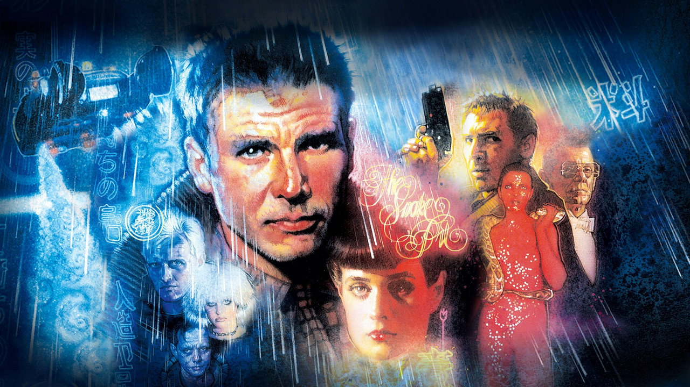
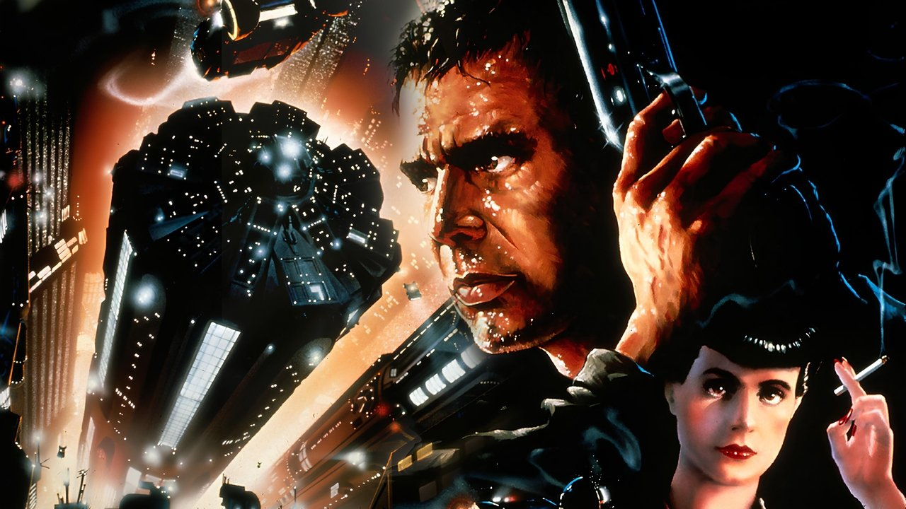
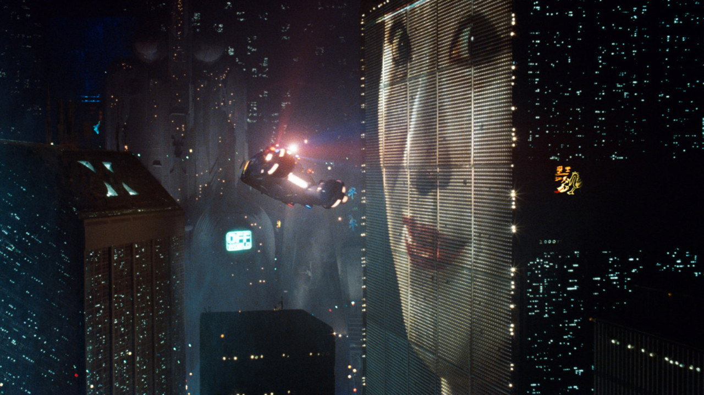
导演与主创 · 他们的历史作品

 火星救援
火星救援 角斗士
角斗士 异形
异形 普罗米修斯
普罗米修斯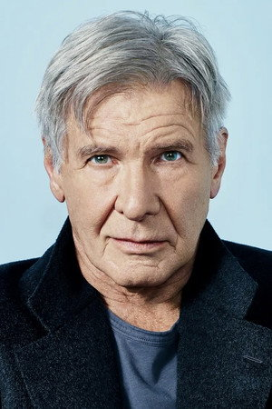
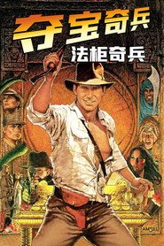
夺宝奇兵：法柜奇兵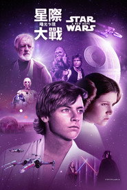
星球大战4：新希望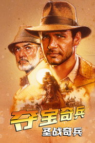
夺宝奇兵3：圣战奇兵 夺宝奇兵2：魔域奇兵
夺宝奇兵2：魔域奇兵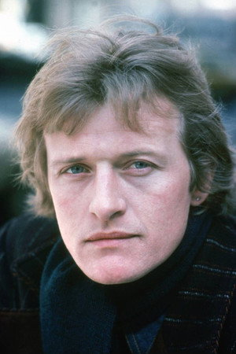
 蝙蝠侠：侠影之谜
蝙蝠侠：侠影之谜 罪恶之城
罪恶之城 星际特工：千星之城
星际特工：千星之城短评（轻微剧透）
《银翼杀手》最好看的地方恰恰是它「不好看」的那部分——慢、湿、暗，人物几乎不解释自己在想什么。斯科特做的最正确的一件事是：他把未来拍成了一座已经用了太久的城市，而不是刚刚建好的样板间。所有的科技都脏了、旧了、漏雨了，这才让「人」和「复制人」的差别变成一个真的会疼的问题。影片真正的核心不是追捕，是那句没说出口的话：如果记忆是植入的，那么靠记忆活着的你是谁？戴克一路追，最后追到自己身上。技术上它是影史美术与灯光的教科书，雨夜、霓虹、巨大的建筑、永远混杂着亚洲面孔的街头，此后四十年所有赛博朋克作品都在抄它。缺点要讲清楚：节奏确实慢，旁白版本（导演剪辑版之前）被很多人吐槽画蛇添足；戴克与瑞秋的感情戏拍得略生硬，是当年制片方硬加的。轻微剧透：结尾那段独白之所以能封神，是因为说这话的是「反派」，而他说的是在场所有人里最像人的一段话。
为什么值得一看
喜欢《攻壳机动队》《银翼杀手2049》《赛博朋克2077》那种雨夜霓虹与「何以为人」命题的观众；想补一遍赛博朋克美学源头的人。节奏慢、信息密度低但氛围密度极高，需要静下心看。R 级，含暴力与裸露。建议直接看 117 分钟的「最终剪辑版」。内地未引进。
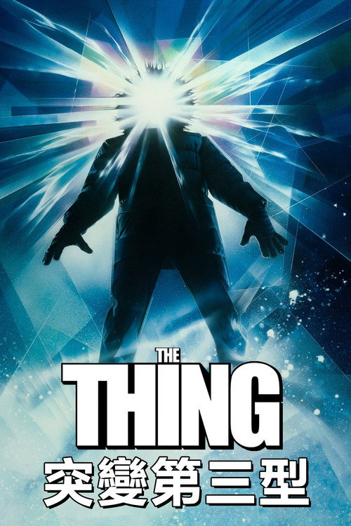
怪形 The Thing
它会模仿你。所以从现在起，谁都不能单独待着。
剧情梗概
南极，美国科考站。一架挪威直升机追着一条雪橇犬冲进营地，机上的人死了，狗被留下。队员很快发现这条狗不对劲。他们翻看挪威人留下的录像与尸体，意识到那东西是一种能完美复制任何生物的外星生命——它可以变成你身边的任何一个人，包括你自己。十二个人被困在与世隔绝的冰原上，暴风雪不停，而信任这件事已经不可能了。
亮点
- 约翰·卡朋特执导；这是他「启示录三部曲」的第一部，另两部是《天魔回魂》与《战栗黑洞》。
- 库尔特·拉塞尔饰直升机飞行员麦克里迪；卡朋特坚持让他留胡子、戴墨镜，理由是「这样他看起来比外星人还不好惹」。
- 全部特效由罗布·博廷团队用实体模型、乳胶与机械装置完成，没有一格 CGI，其中几场变形戏让剧组连续工作数十小时。
- 1982 年上映时被影评人严厉批评「只有特效没有人性」，票房也不佳；如今被公认为科幻恐怖片巅峰之一，烂番茄回升至 84%。
- 2011 年推出同名前传，讲述挪威营地那边发生的事，与正传的时间线直接衔接。
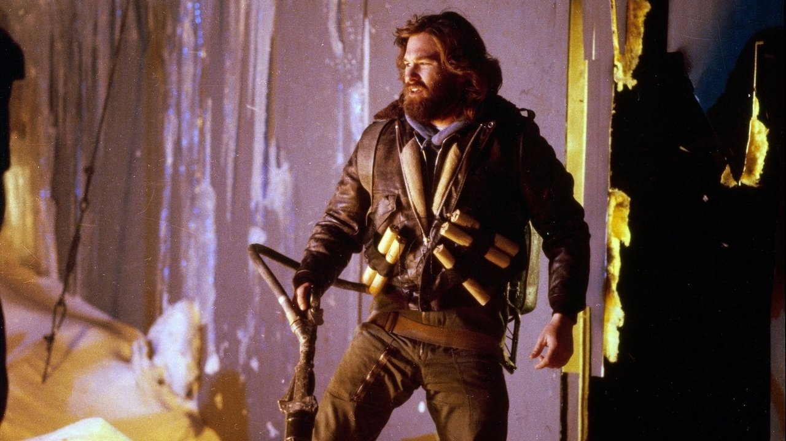
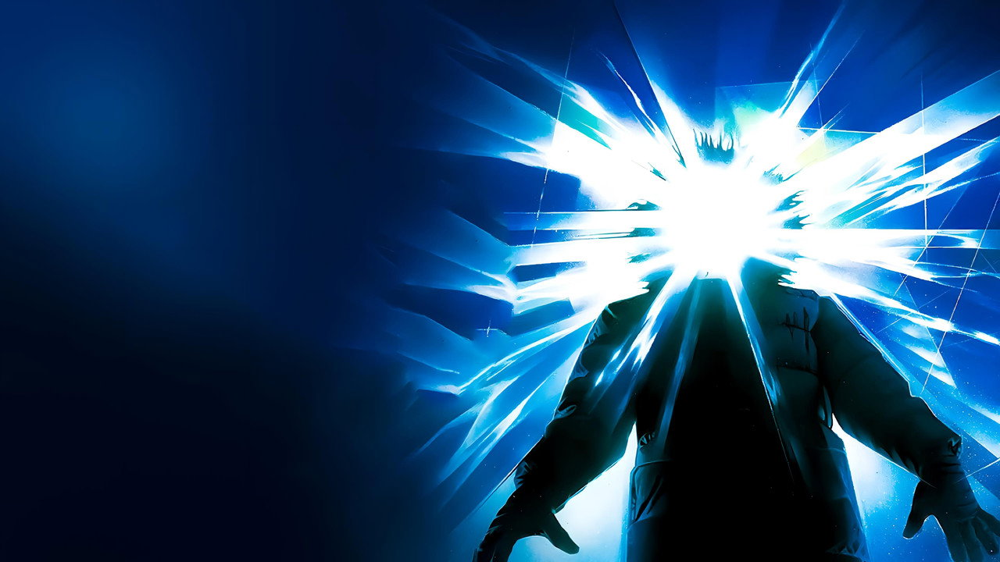
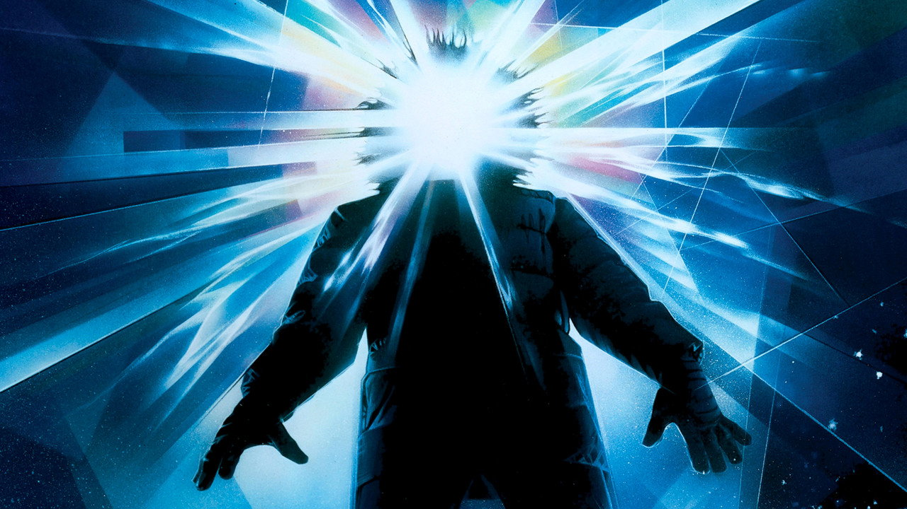
导演与主创 · 他们的历史作品
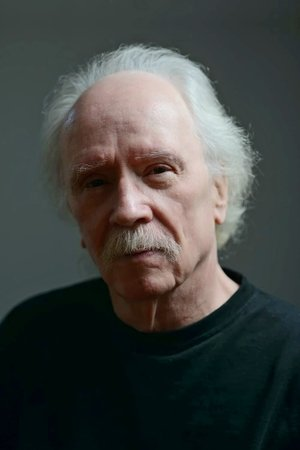
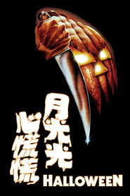
月光光心慌慌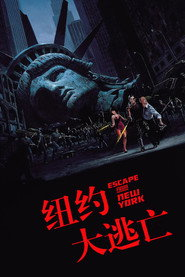
纽约大逃亡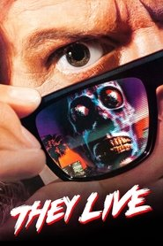
极度空间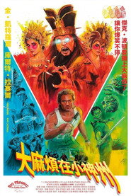
妖魔大闹唐人街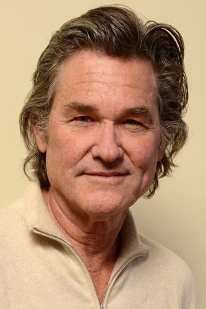
 八恶人
八恶人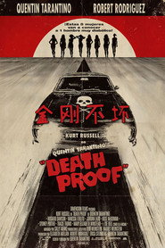
金刚不坏 银河护卫队2
银河护卫队2短评（轻微剧透）
《怪形》真正的恐怖不是那个东西长什么样，是「你没法证明我不是它」。卡朋特把推理片的结构塞进了科幻恐怖：每一次死亡都在缩小嫌疑范围，但每一次怀疑都可能杀错人，而杀错人同样会让全员完蛋。这种「没有可验证信息」的处境，比任何血浆都难受。技术上它是实体特效的巅峰，那些变形场景是真实做出来的，也因此有一种 CGI 永远做不出的黏腻与重量。影片最冷的一点是它对人性的判断：最后活下来的两个人彼此举着炸药，谁也不知道对方是不是人，而他们最终选择什么都不做。缺点必须说：1982 年的评价（Metacritic 仅 57）不是没来由的——人物刻画很薄，几乎全靠功能性区分；中段有几处逻辑略粗；几个角色的死法过于仓促。豆瓣 8.1 相对烂番茄 84% 偏低，也说明它在国内偏小众。轻微剧透：影片最后没有救援、没有解释，只有两个人在雪地里对峙——这是它最诚实的一笔。
为什么值得一看
喜欢《异形》系列那种「密闭空间 + 未知生物」的观众；喜欢推理式恐怖、能接受大量身体变形与血腥（R 级）的成年观众。不适合想看人物成长或情感线的人——它几乎没有人情味，这正是它的主题。内地未引进。
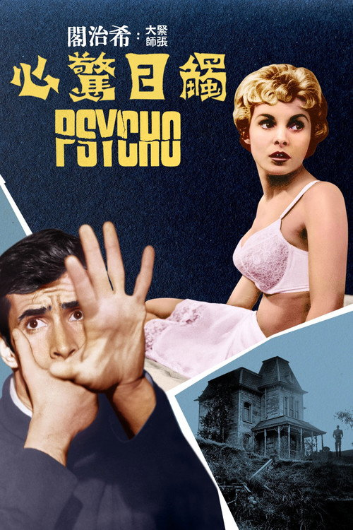
惊魂记 Psycho
她只是想换个地方重新开始。她停在了错误的那家汽车旅馆。
剧情梗概
凤凰城的女秘书玛丽莲一时冲动卷走客户四万美元，连夜出逃。雨夜里她拐进路边一家几乎没人的贝茨汽车旅馆，店主诺曼·贝茨是个羞怯、礼貌、被母亲管得死死的年轻人。当晚玛丽莲在浴室遇害。此后赶来寻找她的妹妹、她的男友与私家侦探陆续逼近那栋房子，而那栋房子后面还有一栋房子。
亮点
- 阿尔弗雷德·希区柯克执导，改编自罗伯特·布洛赫的小说，小说灵感来自真实连环杀手艾德·盖恩。
- 那场浴室戏由 78 个镜头、约 45 秒构成，拍摄耗时七天；希区柯克选择拍黑白片，其中一个原因就是彩色的血更难通过审查。
- 配乐由伯纳德·赫尔曼用纯弦乐完成，那段尖锐、反复下行的弦乐是影史最著名的音效之一；希区柯克原本打算让这场戏完全无声。
- 影片用电视剧组、低成本、快速拍成——希区柯克刚拍完《西北偏北》，想证明自己能用小预算再吓一次观众。
- 烂番茄 97%、Metacritic 97；1992 年入选美国国会图书馆国家影片登记表；豆瓣 8.8。
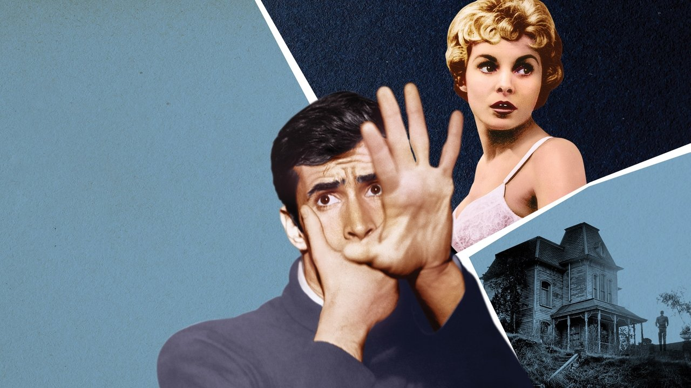
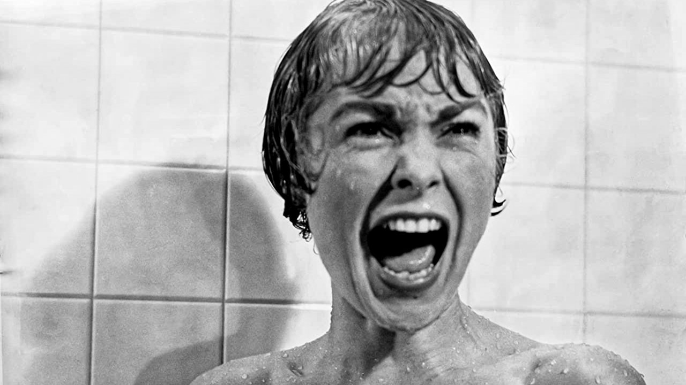
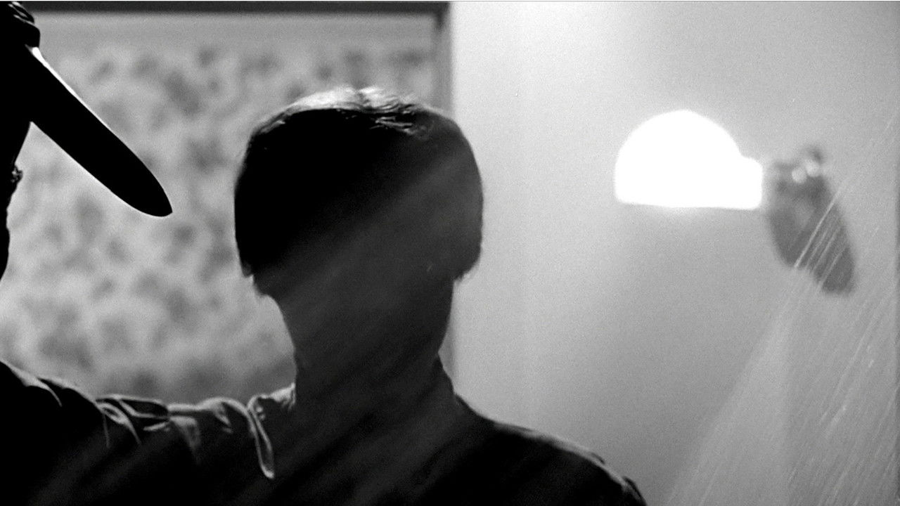
导演与主创 · 他们的历史作品
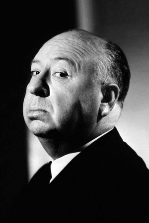
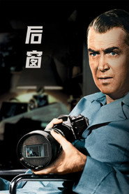
后窗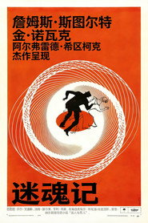
迷魂记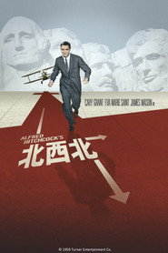
西北偏北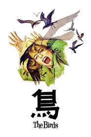
群鸟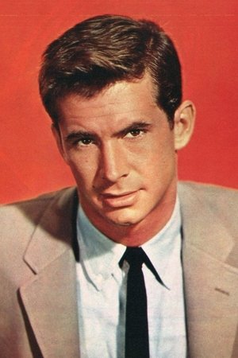
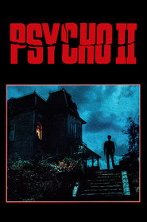
惊魂记2 审判
审判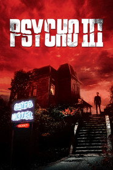
惊魂记3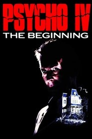
惊魂记4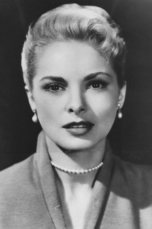
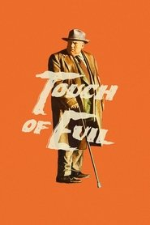
历劫佳人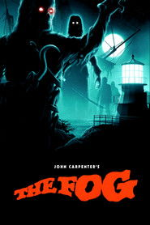
夜雾杀机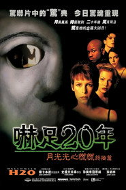
月光光心慌慌7：20年之后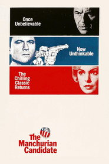
满洲候选人短评（轻微剧透）
《惊魂记》是那种「你已经知道结局，还是会被吓到」的电影——因为它真正厉害的不是转折，是前面那四十分钟。希区柯克先花大量时间让你和玛丽莲绑在一起：她偷钱、她心虚、她在雨里开车、她后悔。你希望她逃掉。然后在她决定回头自首、也就是她最「无辜」的那一刻，他把她杀掉了。这一刀砍的不只是角色，是观众的心理契约——从那以后没人再敢相信「主角安全」。技术上无可挑剔：黑白摄影让血变成墨水，反而更抽象、更难忍受；赫尔曼的弦乐像一把刀反复划；安东尼·帕金斯的表演把一个害羞的年轻人演得像一只随时会被踩到的虫。缺点也说清楚：六十多年过去，这个转折已经被模仿到失效，第一次看的人几乎都知道结局；片尾那段精神病学解释是后加的，既冗长又笨拙。轻微剧透：影片最后诺曼坐在那里、母亲的声音在他脑子里说话的那个镜头，是影史最冷的一个收尾——它没有惩罚，只有接管。
为什么值得一看
想补现代恐怖片源头的人；喜欢《闪灵》《遗传厄运》那种「房子与家庭本身就是恐怖」的观众；对希区柯克、黑白摄影或电影史有兴趣的人。PG 级放到今天约等于 R，含暴力与惊吓。60 多年前的片子，节奏与表演风格和今天差别很大，需要一点适应。内地未引进。
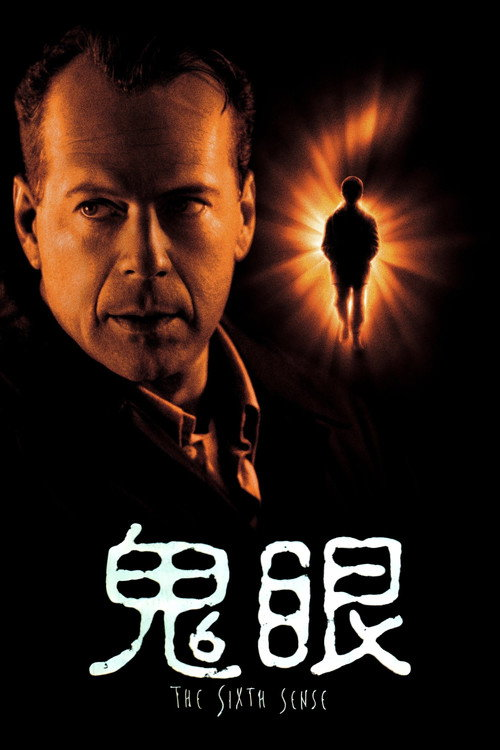
灵异第六感 The Sixth Sense
我能看见死人。他们不知道自己死了。
剧情梗概
费城的儿童心理学家麦尔坎·克罗一年前被一名他没能治好的少年开枪打伤。秋天，他接手一个新病例：九岁的柯尔，一个孤僻、害怕、声称能看见死人的男孩。克罗花了很长时间才相信他，柯尔也慢慢学会不再逃跑。就在治疗快要起作用的时候，克罗在自己家里发现了一件关于自己的事——那件事他其实一直只有感觉，没有证据。
亮点
- M·奈特·沙马兰自编自导，这是让他一夜成名的第三部长片；此后「沙马兰式反转」成了他作品的固定标签。
- 海利·乔·奥斯蒙饰柯尔，凭此片获奥斯卡最佳男配角提名，当时他只有十一岁；那句「I see dead people」入选 AFI 百年百大电影台词第 44 位。
- 布鲁斯·威利斯饰克罗；全片刻意不给任何超出他视野的信息，二刷时会发现导演从头到尾都没有说谎。
- 影片获六项奥斯卡提名（最佳影片、导演、原创剧本、剪辑、男配、女配），但一项未获奖。
- 全球票房 6.73 亿美元，是 1999 年全球票房第九；连续五周位居北美票房第一。
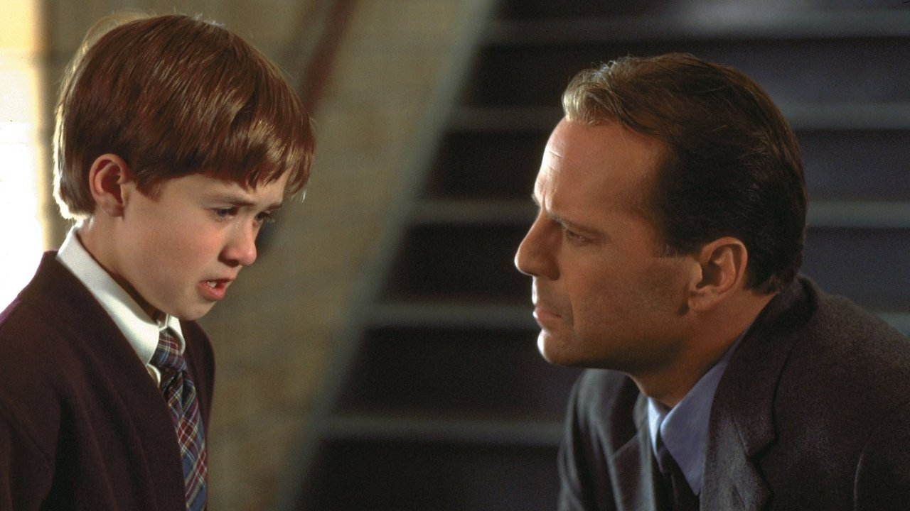
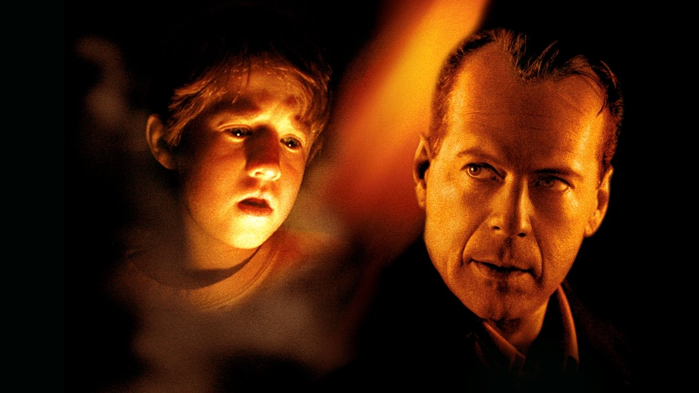
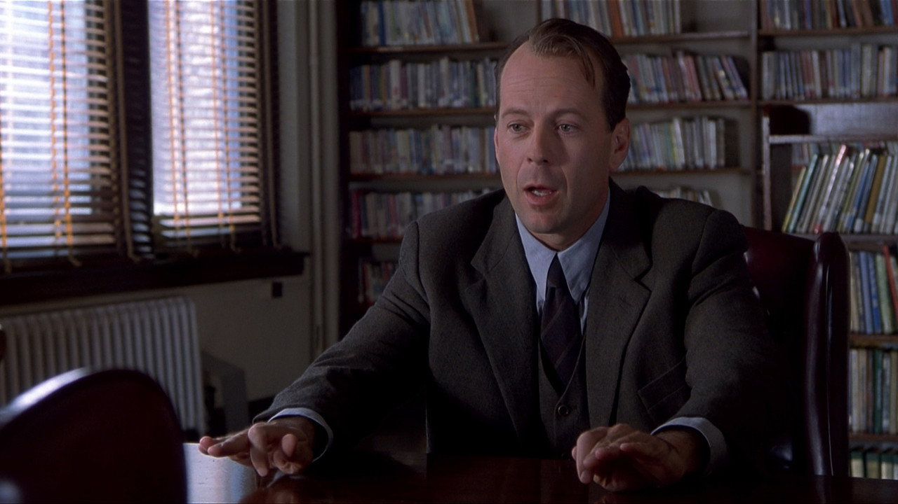
导演与主创 · 他们的历史作品
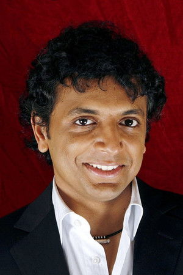
 分裂
分裂 不死劫
不死劫 玻璃先生
玻璃先生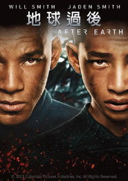
重返地球
 虎胆龙威
虎胆龙威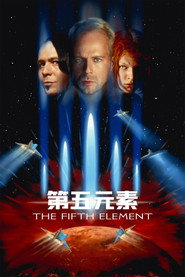
第五元素不死劫 十二猴子
十二猴子
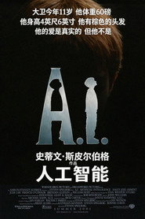
人工智能 阿甘正传
阿甘正传 森林王子2
森林王子2 让爱传出去
让爱传出去短评（轻微剧透）
《第六感》常被当成一部「反转片」来谈，但它真正的分量其实不在那一下，而在沙马兰对细节的诚实。影片从头到尾都严格限制在克罗的视角里——所有他不在场的戏都不拍，所有他没看见的人都不出现。所以那个著名的转折不是「骗」，是「你和他一样，从来没往那个方向想过」。这才是它能二刷的原因：第二遍你不是在找答案，你是在找自己漏掉的东西。它同时也是一部很温柔的片：柯尔不是被治好的，他是被相信了，而克罗这个角色从头到尾都在做同一件事——把一个被吓坏的孩子接住。技术上它克制得惊人，几乎不靠音效吓人，全靠走廊、门缝、帐篷里的呼吸。缺点必须说：Metacritic 仅 64 说明影评人对它并不狂热，认为它情绪上偏煽、结构上是「为了那一下」；沙马兰此后的作品反复用同一套，也让这部片被回看得更苛刻。轻微剧透：那枚婚戒是它给出的全部证据，而它只出现了不到一秒。
为什么值得一看
能接受「被剧透也仍然好看」的那种观众——它二刷反而更值。喜欢温柔向恐怖、不想被血浆攻击的人（PG-13，几乎无血腥）。适合想看一部「看完会有点想哭而不是尖叫」的悬疑片的人。不适合讨厌情绪煽动的人。内地未引进，各流媒体可看。
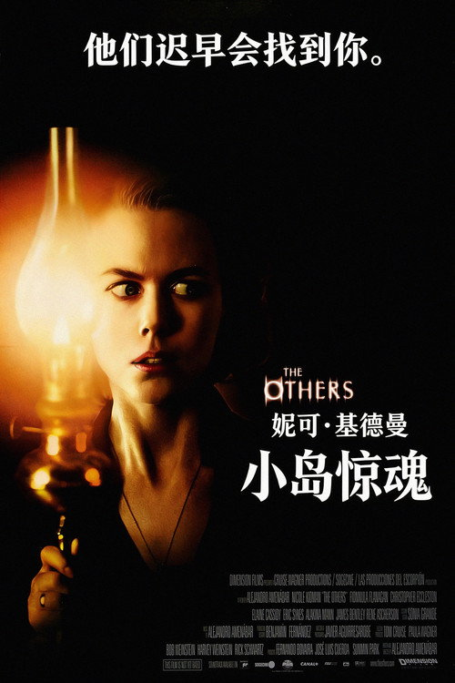
小岛惊魂 The Others
屋子里有别人。她一直这么想，直到有人告诉她——是你们。
剧情梗概
1945 年，英吉利海峡的泽西岛。格蕾丝带着一双儿女住在一栋终年拉着厚窗帘的大宅里，等丈夫从战场回来。孩子患有一种罕见的光敏症，见光会致命。一天，原来的仆人全部不告而别，却有三个陌生人主动上门应聘：一个老园丁、一个厨娘、一个不说话的年轻女仆。之后屋里的门会自己开，钢琴会自己响，女儿说她看见了一个陌生的小男孩。
亮点
- 亚历桑德罗·阿曼巴自编自导，还亲自写了配乐；他此前拍过《睁开你的双眼》，之后拍了《深海长眠》。
- 妮可·基德曼饰格蕾丝，凭此片获金球奖提名与土星奖最佳女主角；她后来说这是她演过最消耗的角色之一。
- 全片不使用 jump scare，也不使用数字特效，靠光影、声音与构图制造压迫感——阿曼巴说他想拍一部「古典的」鬼故事。
- 拿下西班牙戈雅奖最佳影片、最佳导演等八项大奖；全球票房约 2.10 亿美元，是当年回报率最高的独立片之一。
- 烂番茄 85%、IMDb 7.6、豆瓣 8.2；口碑稳定但不算爆，属于那种「看过的人都说好」的片子。
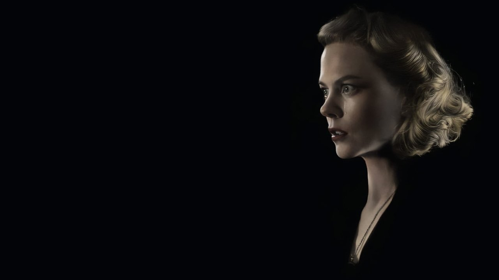
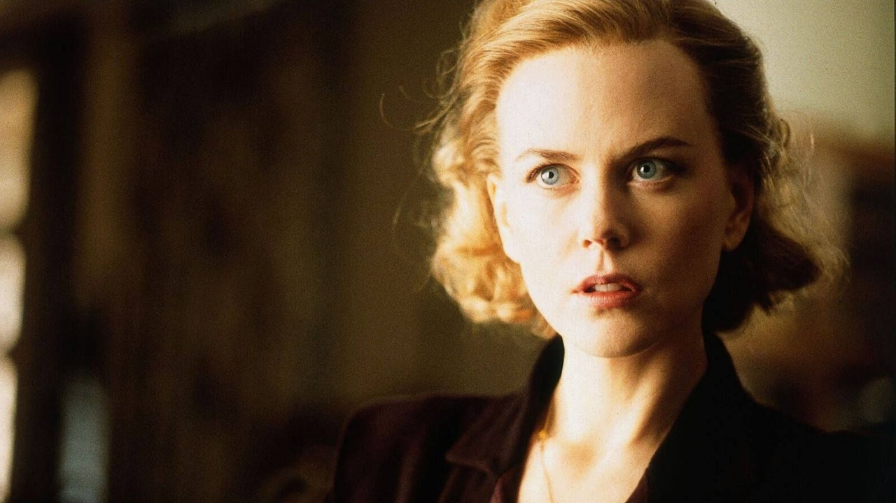
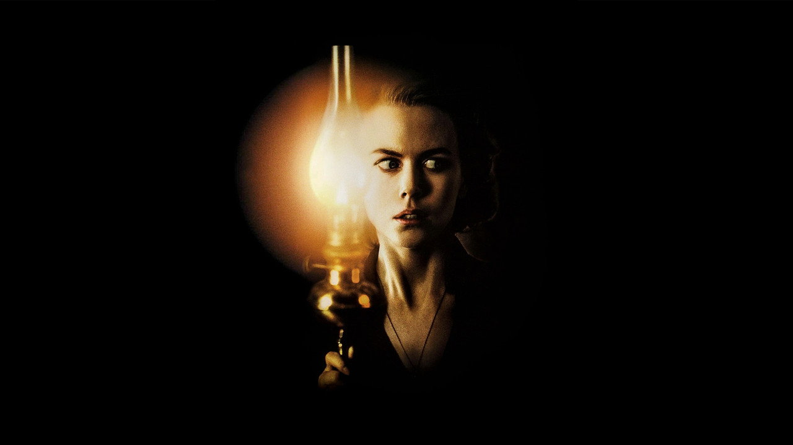
导演与主创 · 他们的历史作品

 大开眼戒
大开眼戒 海王
海王 狗镇
狗镇 北欧人
北欧人短评（轻微剧透）
《小岛惊魂》是一部「视角诡计」教科书，而它的高明在于完全不靠作弊。阿曼巴从头到尾都让你待在格蕾丝的立场上——她恐惧、她保护孩子、她怀疑新来的仆人——所以你会和她一起把「闯入者」当成敌人。等真相揭晓时你才发现，自己刚才站的那个位置，正是这部片从头到尾在拍的东西：一个不肯承认自己已经失去一切的人。它同时也是一部非常古典的鬼故事：全片没有血，没有怪物，没有一惊一乍，靠的是厚重的窗帘、永远关着的门、雾、和一座大到让人发冷的房子。妮可·基德曼的表演是全片支柱，她必须同时演出「坚强」和「随时会碎」，这两者之间没有过渡。缺点也说清楚：中段节奏偏慢，重复镜头不少，耐心不足会拖；反转本身在今天的观众眼里已经不算新鲜；IMDb 仅 7.6 说明海外普通观众对它的热情有限。轻微剧透：影片最后格蕾丝说「这房子是我们的」，这句话是它在说的全部——她不是被赶走的，是她不肯走。
为什么值得一看
喜欢《第六感》《万能钥匙》那种「结局式电影」的观众；想看一部不血腥、靠氛围和心理压迫取胜的鬼故事的人；妮可·基德曼的影迷。PG-13，几乎没有视觉冲击，但压抑感强。不适合想看快节奏恐怖片的人。内地未引进。
禁闭岛 Shutter Island
66 个病人，档案上写着。可他数出来是 67 个。
剧情梗概
1954 年，联邦执法官泰迪·丹尼尔与新搭档查克登上一座孤岛，调查一名从严密看管的精神病院凭空消失的女病患。岛上有 66 名有档案的精神病罪犯，但泰迪在牢房里发现一张字条：谁是第 67 个？他偏头痛越来越重，反复梦见达豪集中营与死于火灾的妻子。他越查越确信这里有活体实验，而所有回答他问题的人都太客气了。
亮点
- 马丁·斯科塞斯执导，改编自丹尼斯·勒翰的同名小说；这是他与莱昂纳多·迪卡普里奥的第四次合作。
- 莱昂纳多·迪卡普里奥饰泰迪；马克·鲁弗洛饰查克；本·金斯利与马克斯·冯·叙多夫分饰两位医生。
- 全片没有使用传统配乐，斯科塞斯直接借用彭德雷茨基、利盖蒂、约翰·凯奇、白南准等人的现代音乐，制造持续的神经质底噪。
- 主要拍摄地是马萨诸塞州梅德菲尔德州立医院旧址，约 70% 的场景是在一座废弃仓库里搭建的。
- 成本 8000 万美元，全球票房 2.94 亿美元；烂番茄仅 69% 但观众 77%、豆瓣 8.8，是典型的「影评人保留、观众买账」。
导演与主创 · 他们的历史作品
 华尔街之狼
华尔街之狼 无间道风云
无间道风云 好家伙
好家伙 出租车司机
出租车司机
 盗梦空间
盗梦空间 泰坦尼克号华尔街之狼
泰坦尼克号华尔街之狼 荒野猎人
荒野猎人
 复仇者联盟
复仇者联盟 雷神3：诸神黄昏
雷神3：诸神黄昏 复仇者联盟4：终局之战
复仇者联盟4：终局之战短评（轻微剧透）
《禁闭岛》最值得说的一点是：它把「疯」拍成了一种自我保护的善意。泰迪不是被别人骗了，他是自己把整个世界重排了一遍，好让自己不用面对他做过的事。斯科塞斯聪明的地方在于他一直给你怀疑的余地——你可以从头到尾坚持「这是阴谋」，影片到最后也没有把这条路彻底堵死，而这个开放性正是它比同类片强的地方。技术上它几乎无可挑剔：罗伯特·理查森的摄影把整座岛拍成潮湿、阴冷、永远在下雨；借用现代音乐当配乐的决定让每一场平静的对话都像在报警；灯塔那场戏是全片的信息闸门。迪卡普里奥的表演是他生涯里被低估的一次，他必须演一个「正在演」的人，而且要让两种读法都成立。缺点也说清楚：138 分钟偏长，第二幕有重复；烂番茄 69% 说明影评人认为它过于炫技、情感偏冷；结尾的开放式处理会让一部分人觉得含糊。轻微剧透：最后那句「像怪物一样活着，还是像好人一样死去」不是谜语，是他已经做了选择。
为什么值得一看
喜欢《穆赫兰道》《致命ID》那种「精神状态本身是迷宫」的观众；斯科塞斯或迪卡普里奥的影迷；能接受 138 分钟、大量梦境与回忆穿插、以及一个不封死的结尾的人。含暴力、尸体与集中营回忆画面（R 级）。不适合想看明确答案的人。内地未引进。
非常嫌疑犯 The Usual Suspects
他说他只是个瘸子。他讲了整整一晚上的故事。
剧情梗概
圣佩德罗港一艘货轮爆炸，27 人死亡，9000 万美元失踪。唯一的幸存者是一个严重烧伤的匈牙利人，他在医院里反复念一个名字：凯撒·索泽。警探把另一个幸存者——一个跛脚、口吃、看起来毫无威胁的小骗子金特——叫来问话。金特从六年前的一次警方列队指认开始讲起，讲到五个互不相识的罪犯如何被一个看不见的人捏在一起。他讲了整整一夜。
亮点
- 布莱恩·辛格执导，克里斯托弗·麦奎里编剧；麦奎里凭此片拿下奥斯卡最佳原创剧本，后来成为汤姆·克鲁斯的长期合作者（《碟中谍》系列）。
- 凯文·史派西饰金特，拿下奥斯卡最佳男配角；他为了这个角色刻意设计了那种含糊、讨好、随时准备道歉的说话方式。
- 加布里埃尔·伯恩饰惯犯基顿；本尼西奥·德尔·托罗、凯文·波拉克、斯蒂芬·鲍德温分饰另外几名罪犯——德尔·托罗那口几乎听不清的英语是他自己要求的。
- 影片成本仅 600 万美元，是 1990 年代最赚钱的独立片之一；那场「列队指认」的戏是影史被模仿最多的场景之一。
- 烂番茄 88%、IMDb 8.5、豆瓣 8.6；「凯撒·索泽」从此成了「幕后黑手」的代名词。
导演与主创 · 他们的历史作品

 波西米亚狂想曲
波西米亚狂想曲 X战警：逆转未来
X战警：逆转未来 X战警：天启
X战警：天启 X战警
X战警
 美国丽人
美国丽人 极盗车神
极盗车神 洛城机密
洛城机密 虫虫危机
虫虫危机 遗传厄运
遗传厄运短评（轻微剧透）
《非常嫌疑犯》的核心不是「谁是凶手」，是「谁在讲这个故事」。麦奎里的剧本做了一件极聪明的事：他让你和审讯他的警探处在完全相同的信息位置上——你听到的每一句话都来自一个明确有动机撒谎的人，而你没有任何别的来源。所以这部片真正的主角不是凯撒·索泽，是「叙述」本身。金特讲得越详细，你越觉得可信；可是细节越多，编造的痕迹其实越重——而影片从头到尾都在暗示这一点，只是你第一次看时不会去数。史派西的表演是全部：他演的不是「聪明」，是「无害」，而这两者在最后三分钟同时翻转。技术上它克制、干净，不靠血腥，靠剪辑节奏与台词密度。缺点也说清楚：它几乎完全依赖那一个反转，二刷时张力会大幅下降；几个罪犯的角色刻画偏功能化；德尔·托罗的角色在部分观众看来是刻意的怪癖。轻微剧透：影片给出的所有关键线索都是「现场临时拼出来的」——办公室墙上的名字、咖啡杯底的品牌，这才是它在告诉你该怎么看。
为什么值得一看
喜欢《看不见的客人》《利刃出鞘》那种高密度反转与不可靠叙述的观众；想看一部 106 分钟、没有一个多余镜头的犯罪片的人。R 级，含暴力与粗口但血腥不多。不适合被剧透——如果你已经知道结局，这部片的乐趣会大打折扣。内地未引进。
致命ID Identity
十个人困在一间汽车旅馆里，一个接一个死。尸体旁边都留着号码牌。
剧情梗概
内华达的暴雨夜，公路中断。十个互不相识的人被迫挤进一家破旧的汽车旅馆：退役警察出身的司机、过气女明星、妓女、一对新婚夫妇、押着犯人的警探、旅馆老板……他们一个接一个死去，每具尸体旁都留着一枚从十倒数到一的号码牌。活着的人开始互相猜疑，而他们逐渐发现彼此之间存在着不该存在的联系——比如，所有人的生日是同一天。
亮点
- 詹姆斯·曼高德执导，迈克尔·库尼编剧；曼高德后来拍了《与歌同行》《金刚狼3：殊死一战》《极速车王》。
- 约翰·库萨克饰司机艾德；雷·利奥塔饰押送犯人的警探罗德斯；阿曼达·皮特饰妓女帕瑞斯。
- 影片结构直接借用阿加莎·克里斯蒂《无人生还》的「暴风雪山庄」模式，但把最终的答案换成了另一个方向。
- 成本 2800 万美元，全球票房约 9026 万美元；全片只有 90 分钟，节奏极快，几乎没有一场废戏。
- 烂番茄仅 62%（观众 75%）、IMDb 7.3，但豆瓣 8.8、超 80 万人评分——是本期口碑落差最大的一部。
导演与主创 · 他们的历史作品
 金刚狼3：殊死一战
金刚狼3：殊死一战 金刚狼2
金刚狼2 极速车王
极速车王
 2012
2012 成为约翰·马尔科维奇
成为约翰·马尔科维奇 安娜斯塔西娅
安娜斯塔西娅短评（轻微剧透）
《致命ID》是一部把 90 分钟用满的片子，而它最大的优点是诚实。多重人格这个设定最容易被拿来当万能借口——逻辑断了就说「反正都是幻想」——但库尼的剧本在需要逻辑的地方真的把逻辑补齐了：号码牌的总数是十，说明十一个里面有一个不算；所有人生日相同不是巧合，是同一个人的生日；所有「死者」消失的尸体也都有解释。所以最后那一下翻转不是凭空的，是前面所有不对劲的地方一次性对齐。技术上它也很克制：暴雨、霓虹、汽车旅馆的狭窄走廊，几乎不用血腥，靠的是「下一个是谁」这个压力。缺点必须说清楚：烂番茄仅 62%、IMDb 7.3 说明海外影评人与观众评价远低于豆瓣——批评集中在人物单薄、对精神疾病的描写不严谨、以及结尾的那段解释偏生硬。豆瓣 8.8 更多来自「第一次看的震撼」。轻微剧透：影片真正的反转不在「谁是凶手」，而在「那个最不像凶手的人，为什么必须存在」。
为什么值得一看
喜欢《致命魔术》《禁闭岛》那种人格与身份题材的观众；想看一部短、快、不拖沓的悬疑惊悚片的人（90 分钟）。R 级，含暴力但血腥程度不高。注意：如果你已经知道结局，这部片的乐趣会少一半——它是一次性体验。内地未引进。
源代码 Source Code
他只剩八分钟。所以他要把这八分钟过很多遍。
剧情梗概
美军直升机飞行员柯尔特·史蒂文斯在一列开往芝加哥的通勤列车上醒来，对面的女人在跟他说话，还叫得出他的名字。他冲进洗手间，镜子里是另一张脸。八分钟后，列车爆炸。他再次醒来，回到那节车厢，同样的八分钟。一名女军官通过通讯器告诉他，他正在执行「源代码」任务——进入死者最后八分钟的记忆，找出炸弹客。而他唯一想不通的是，自己明明记得两天前还在阿富汗。
亮点
- 邓肯·琼斯执导，这是他继《月球》(2009) 之后的第二部长片；两部片都靠单一空间与单一主角撑起全片。
- 杰克·吉伦哈尔饰柯尔特；他几乎每一场戏都在同一节车厢里，全靠细微的表情与语气变化区分「这是第几次循环」。
- 米歇尔·莫纳汉饰同车的克里斯蒂娜；维拉·法米加饰女军官古德温；杰弗里·怀特饰「源代码」项目的发明者。
- 成本约 3200 万美元，全球票房约 1.48 亿美元；烂番茄 92%，是 2011 年口碑最好的科幻惊悚片之一。
- 剧本最初入选 2007 年好莱坞「黑名单」（最受欢迎但尚未拍出的剧本榜单）。
导演与主创 · 他们的历史作品

 魔兽
魔兽 月球
月球 缄默
缄默 Whistle
Whistle
 死亡幻觉
死亡幻觉 夜行者
夜行者 十二宫
十二宫 蜘蛛侠：英雄远征
蜘蛛侠：英雄远征 像素大战
像素大战 失踪宝贝
失踪宝贝短评（轻微剧透）
《源代码》是一部把科幻设定收得很紧的片子——它不解释平行宇宙怎么来的、不铺世界观、不谈技术伦理的大道理，只做一件事：把同一个八分钟拍很多遍，让主角在重复里一点点变成另一个人。邓肯·琼斯很清楚这类片的风险是重复段落会无聊，所以他的解法是让「每一次循环的差异」都服务于人物：柯尔特第一次是惊慌，第二次是愤怒，第三次开始观察，再后来他开始想救那个女人——科幻在这里变成了「一个人怎么重新学会在乎」。而它最后给出的答案也温和得意外：不是拯救世界，是给一个不相干的人发了一条短信。技术上它克制、干脆，93 分钟没有一句废话。缺点也说清楚：设定本身经不起细究，「源代码」到底是模拟还是平行世界，影片自己也没统一；IMDb 仅 7.5 说明它在海外普通观众里评价中等；几次循环的衔接略机械。轻微剧透：它真正的结局不是停在爆炸那一秒，而是那个没人看着的、慢慢走开的下午。
为什么值得一看
喜欢《月球》《彗星来的那一夜》那种低成本、高概念、靠结构取胜的科幻片的观众；想看一部 93 分钟、节奏利落、不用做笔记就能跟上的人。PG-13，几乎没有血腥。不适合想看硬科幻设定或宏大世界观的人——它把力气全花在了人物上。内地未引进。
香水 Perfume: The Story of a Murderer
他出生在全巴黎最臭的地方，却拥有人类最灵敏的鼻子。他自己没有任何气味。
剧情梗概
十八世纪的巴黎，让-巴蒂斯特·格雷诺耶生在鱼市最腥臭的角落。他天生能分辨世界上所有的气味，唯独自己身上什么味道都没有。他在制革厂做工、在调香师巴尔迪尼门下当学徒，学会了保存气味的方法。为了留住他唯一留不住的那种气味——少女身上的味道——他开始在格拉斯连续作案。直到他被送上绞架，而那一天，他手里握着一小瓶东西。
亮点
- 汤姆·提克威执导，改编自帕特里克·聚斯金德的同名小说；提克威此前拍《罗拉快跑》，后来与沃卓斯基姐妹合导《云图》。
- 本·威士肖饰格雷诺耶，这是他第一次主演长片；他后来成了《007》里的 Q 与《帕丁顿熊》的配音。
- 达斯汀·霍夫曼饰落魄调香师巴尔迪尼；艾伦·瑞克曼饰贵族里希斯；旁白由约翰·赫特担任。
- 影片拿下五项土星奖提名，并获欧洲电影奖最佳摄影；成本约 6500 万美元，全球票房约 1.35 亿美元。
- 影评严重分裂：烂番茄 59%、Metacritic 56，罗杰·艾伯特却给了满分四星，称它是「年度最被低估的电影」；豆瓣 8.4。
导演与主创 · 他们的历史作品
 云图
云图 帕丁顿熊
帕丁顿熊 007：大破天幕杀机
007：大破天幕杀机 007：幽灵党
007：幽灵党
 雨人
雨人 功夫熊猫
功夫熊猫 铁钩船长
铁钩船长 毕业生
毕业生短评（轻微剧透）
《香水》是一个「不可能拍的电影」——它要拍的是气味，而电影恰恰没有嗅觉。提克威的解法很聪明：他不去解释味道，他去拍「闻」：大量极端特写、大量湿润的质感、旁白不断报出气味的名字，于是观众开始在自己的记忆里配味。影片真正的主角是那个悖论——格雷诺耶能分辨一切，却唯独闻不到自己，他是一个在世界里没有坐标的人。所以他做的事不是「变态杀人」，是一种绝望的自我登记：既然我闻不到自己，那我就造出一种能让所有人记住我的气味。本·威士肖的表演是关键，他几乎不说话、不表情，靠一种动物般的专注撑住全片。技术上它华丽得过分：十八世纪巴黎的肮脏与格拉斯的明亮被拍成两个世界，摄影由弗兰克·格里布完成。缺点必须说清楚：烂番茄仅 59%、Metacritic 56 不是没有理由——叙事确实平、人物确实薄，第三幕的道德反转也有争议；147 分钟对这样一个故事偏长。豆瓣 8.4 与烂番茄 59% 的落差，是本期最大的一次分裂。轻微剧透：最后那场刑场戏里，他只需要一滴就够了——那一滴让所有人忘了他是凶手，而这正是影片从头到尾在问的事：被爱和被记住，到底算不算一回事。
为什么值得一看
喜欢《香水》原著、或对「感官与执念」题材有兴趣的观众；喜欢《罗拉快跑》《云图》那种华丽、感官化影像的影迷。能接受 R 级的血腥、裸露与一场极易引起不适的群体场面。不适合想看紧凑叙事的人——它的叙事是平的，魅力在影像与概念上。内地未引进。